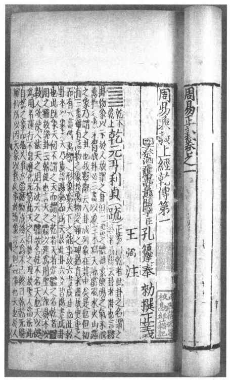

唐朝结束了以前的分裂割据局面，使中国重新实现统一。唐朝是封建经济繁荣发展时期，也是封建文化高度发达时期。为了维持这样一个空前统一的大帝国，唐朝统治者也必须加强文化思想的专制统治，在学术上改变以往那种经学多门、师法各异、章句繁杂的状况。唐朝确立的自愿报名、分科考试的科举考试制度，就是从政治制度上加强统治者对于思想文化的控制。这就需要读书人能有统一的经书课本。为了解决上述问题，唐朝政府在各地广泛设置学校，发展儒学，而且大量征用天下儒士做学官。与此同时，朝廷还特地任命一些著名学者在内廷分班轮值，为皇帝讲论经义、评议政治时事。又由于时间的推移，汉朝人对经书的注解，到了唐朝有了语言隔阂，唐朝人不能都读懂。于是唐太宗特诏令国子祭酒孔颖达等人对过去的各种经说进行了整理、划一的工作。孔颖达等人最后编订出了一套统一的解说，成为读书人学习经书、应付科举考试的标准读本，这就是他们编撰的《五经正义》。
唐朝学者们对于为古代经史旧注所作的解释，通常称为“正义”或“疏”。孔颖达等的《五经正义》，调和了前代的一些学术分歧，其中《易》用三国魏王弼注，（图9—17）《书》用伪孔安国传，《毛诗》用西汉毛公传、郑玄笺，《礼记》用东汉郑玄注，《左传》用西晋杜预注，然后孔颖达等再通过所撰《正义》对经书原文以及旧注作进一步解释。在唐代，五经正义再加上贾公彦的《周礼疏》与《仪礼疏》、杨士勋的《穀梁疏》、徐彦的《公羊疏》等，共合为唐朝的《九经正义》。

图9-17 《周易正义》，元刊明递修《十三经注疏》本
无论是五经正义还是九经正义都是以强调贵贱尊卑的等级名分来巩固封建秩序。孔颖达特别注意封建礼教的重要作用。他扬言，在天地未分之前就已有了礼，礼是“经天地，理人伦”的准则，是统治者用来控制臣民的工具。《礼记·曲礼》说：“礼不下庶人，刑不上大夫。”孔颖达对此在《正义》中解释说，礼是专为统治者治理国家而设立的，而刑罚则是专为对付庶人的。孔颖达在《正义》中阐发的思想以儒家学说为主，但同时也兼取佛、道二家之说。在这里我们已经看到多种文化趋于融合的端倪。唐朝学者在著作《正义》和《疏》时，一般都坚持“注不破经，疏不破注”的原则。所以在五经正义中，既可以看到孔颖达对谶纬神学的批评排斥，也能看到他顺乎谶纬神学的阐释。
虽然唐朝学者们的“正义”和“疏”对汉代以来的经学做了总结，对各种经说做了统一工作，但是也带来了另外一种后果，就是由于读书人是为了应付科举考试而学习经书的，因此他们往往只是墨守正义的定论，不敢有所突破，这就使得学术思想逐渐陷于沉闷状态。在唐朝中后期，就有些学者站出来努力改变这种停滞状况，试图重振儒学。著名学者柳宗元、韩愈等就是这方面的先驱，他们不仅是著名的文学家，还是重要的儒学思想家。
柳宗元以其“天人不相预”（天并不能干预人的命运）的唯物主义观点批判了儒学中的“天人感应”论，进一步对两汉以来儒学中的神学倾向给予清算。他继承了汉代王充的唯物主义思想，在《天说》中肯定“天”本来就是自然地存在着，天地与瓜果、草木一样，只是体积大小不同而已。对于天，“欲望其赏罚者大谬；呼而怨，欲望其哀且仁者，愈大谬矣”［22］。人的功过是自己造成的，“功者自功，祸者自祸”［23］。天地无所谓报应。因此他说：“受命不于天，于其人；休符不于祥，于其仁。”［24］
柳宗元也以进化论的观点阐述了社会的发展。他在《封建论》中，肯定了古代分封制是形势的需要产生的，并非是哪位圣人发明的。秦朝以后的郡县制也是新的形势需要下建立的，而且更优越于分封制。他认为国家的兴衰并不决定于“天意”或圣人，根本在于民心向背。柳宗元对于两汉以来儒学的神学化给予了有力的批判。
韩愈提出儒家的道统论，就是强调儒家仁义之道的传承系统，借以维护儒家孔孟思想的纯洁性，排除后世掺杂进来的各种神学思想。注重传道的系统的佛家禅宗，宣传菩提达摩是禅宗的开山鼻祖，以后将其衣钵传给下一代祖师，意味着领袖地位的传承。至唐朝中叶，禅宗的领袖是五祖弘忍。韩愈借用此法，说儒家的仁义之道也是一代传一代：尧传舜，舜传禹，禹传汤，汤传周文王、武王、周公，以后又传给孔子，孔子传给孟子。孟子以后儒学就中断了，两汉以后的所谓儒学已经偏离了孔孟的学说。韩愈还表示，他立志将孔孟之道接续传下去。他所赞扬的“道”就是孔孟的仁义之道。他要求文学作品应该具有思想性，应该宣传儒家的仁义学说。他说儒家的学说是“天下之公言”，而佛、老等其他杂说都是“为一人之私言”。［25］因为那些杂说只是引导人们追求个人的宗教修养，而儒家则可以通过树立仁义道德来实现治国、平天下的远大目标。由于韩愈宣扬儒家道统论，孟子的身价、名声大为提高，被视为孔子学说的正统继承人。韩愈为了维护传统的儒家文化，对佛教采取了排斥批判的态度，但在这方面没有产生很大影响。韩愈以其“道统论”宣称要把孔孟之道继续传承下来，并且还要加以发扬光大。韩愈在文学上发起的古文运动，实质上是倡导利用文学形式来宣扬儒家的仁义道德，即所谓“文以载道”。
唐朝后期还有李翱提出“复性”说。他遵循孟子“人性善”观点，指出有人做坏事并非出于本性，而是被“情”所迷。情即指喜、怒、哀、惧、爱、恶、欲等等，它们就像河水中的混浊泥沙。一个人如果沉溺于情，就会迷其本性。因此必须“灭情复性”。这种思想实为宋代理学之滥觞。
佛学在唐朝也得到繁荣发展，最终形成汉化佛学。